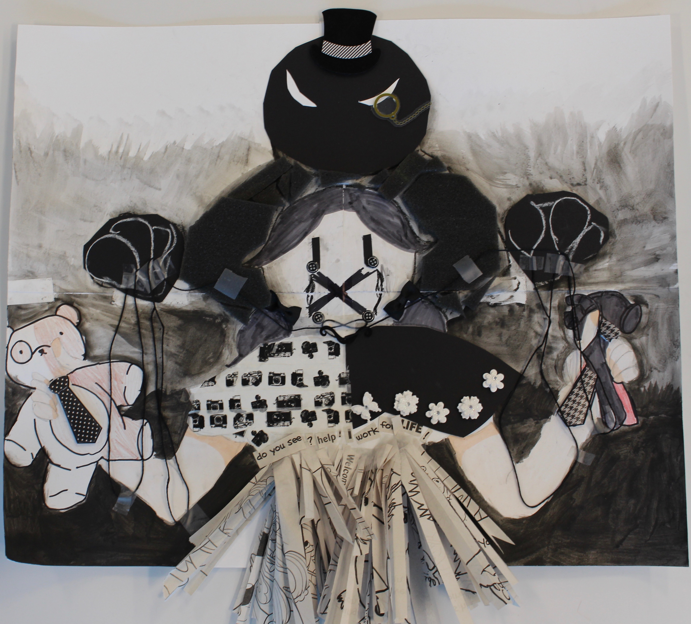

Hello! Welcome to the Yearbook/Humanities 10 section of my project! This was a part of the "A Timely Solution" project that was a factor that factored into bringing the project together, thus, we connected Yearbook and Humanities skills to the project involving many subjects.
In Yearbook/Humanities 10, we worked with many factors of principles of composition in art and in poetry through using many different aspects of these compositions for a whole piece and then justifying why they work well together and connect. The following piece and the textures, color, and focus in it, is meant to highlight a specific message you can think about on the industrial revolution and it's faults in child labor and how it possibly connects to today. Click on the image taken during the industrial revolution to see the full resolution image of what I used to do the other aspects of this project. Click on the image of the poem that was inspired by the child labor image, we were to choose, that used elements, we used and learned, that we believed could help depict and convey what we thought was the image's meaning, for the full piece on a doc. Click on the black and white collage I made that was inspired off the elements I used and their meaning's in the piece. Feel free to click on the image of my justification, also known as my artist's statement, on how all the following are connected.
In Yearbook/Humanities 10, we worked with many factors of principles of composition in art and in poetry through using many different aspects of these compositions for a whole piece and then justifying why they work well together and connect. The following piece and the textures, color, and focus in it, is meant to highlight a specific message you can think about on the connection between social media and art and what may become of it now and in the future. Click on the image taken of a summary of two contradicting articles I wrote about to see the full resolution image of what I used to do the other aspects of this project. Click on the image of the poem that was inspired by what I learned from the different articles, we were to choose, that used elements, we used and learned, that we believed could help depict and convey what we thought could be conveyed for a meaning we believed in, for the full piece on a doc. Click on the starry night collage I made that was inspired off the elements I used and their meaning's in the piece. Feel free to click on the image of my justification, also known as my artist's statement, on how all the following are connected.
{kind=link}
{kind=link}
{kind=link}